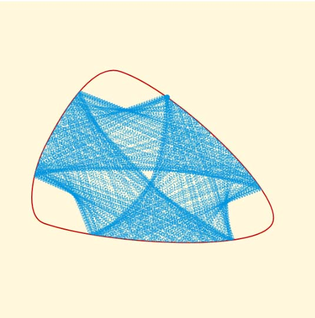
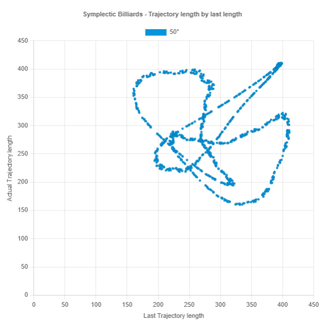
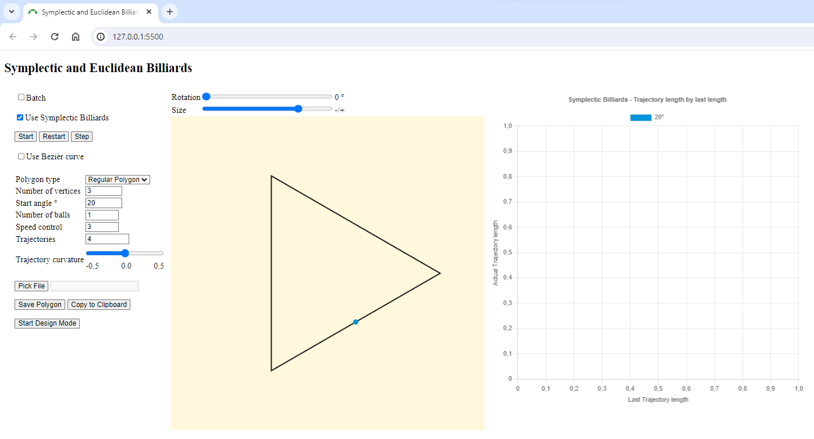

Visualization of Symplectic and Euclidean Billiards in Polygons and Bézier Curves
[Denise Becker, Robin Hoffmann]

{kind=link}
“The quad", a figure known from “Poygonal Symplectic Billiards” by P. Albers et al., as Bézier Curve with a start angle of 50 degrees, the “Symplectic reflection” is shown.
$PROJECT_TITLE$

{kind=link}
The scatter chart to “the quad”, a figure known from “Poygonal Symplectic Billiards” by P. Albers et al., as Bézier Curve with a start angle of 50 degrees, the “Symplectic reflection” is shown.
$PROJECT_TITLE$

{kind=link}
Overview of our web application.
$PROJECT_TITLE$
Abstract
The aim of our previous work, “Visualization of Symplectic and Euclidean Billiards in Polygons”, was to explore and visualize Euclidean and Symplectic billiards in convex and non-convex polygons. This report focuses on integrating more complex functionalities to deepen the research and understanding of mathematical billiards. The extensions include the introduction of Bézier curves instead of polygons, normalized examples allowing size changes and rotation, identification of periodicities in trajectories, curved trajectories, and a user-friendly development environment for polygons with testing and persistence capabilities. This expanded feature set opens up new possibilities for more sophisticated research approaches and provides deeper insights into the world of mathematical billiards.
Links
[Web-Tool]
[Web-Tool]